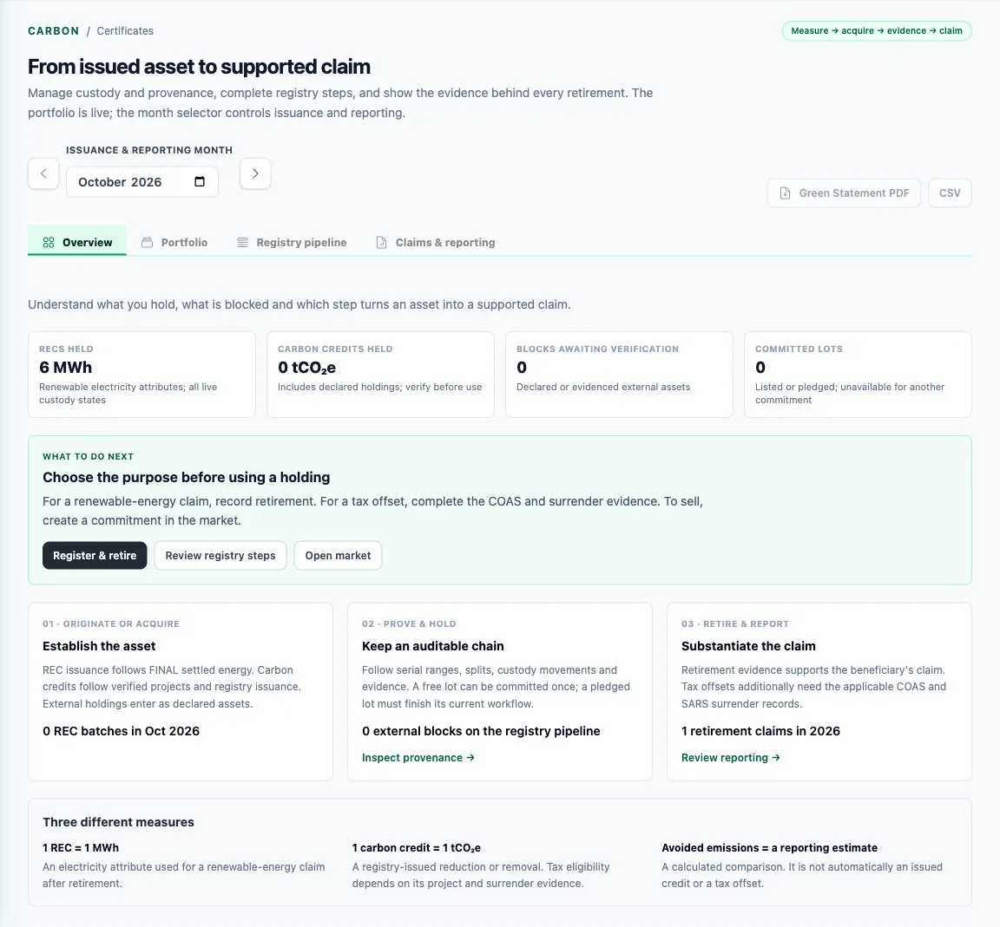
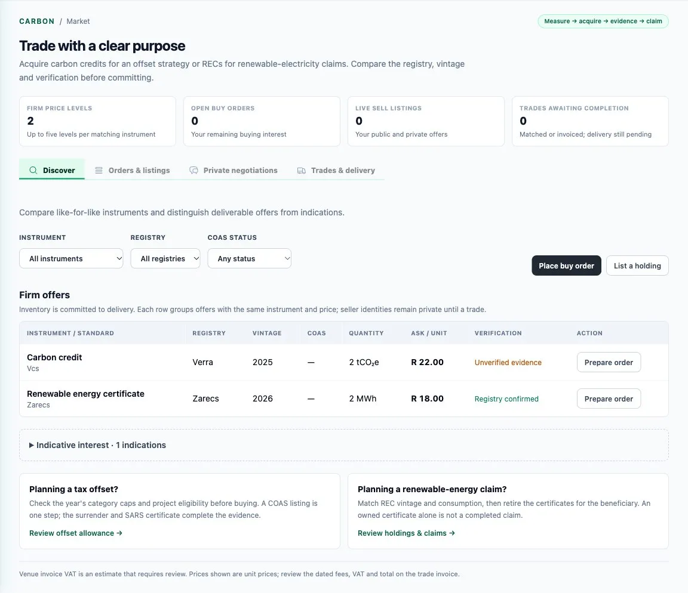
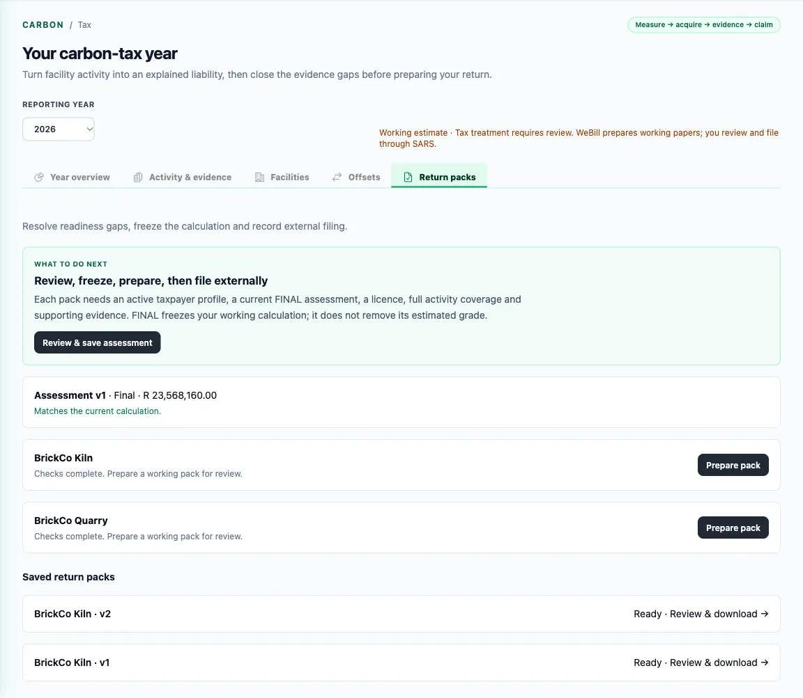

For carbon leads, emitters and buyers of clean power
Certificates you can prove. A tax return you can print.
Webill Green accrues renewable certificates from settled energy, mirrors them from the registry, trades certificates and credits on its carbon venue, and turns a year of facility activity into a carbon-tax return pack. The company reviews, signs and files.
Three different measures, never mixed.
1 REC = 1 MWh
A renewable electricity attribute, used for a renewable-energy claim once it is retired. Accrued from FINAL settled energy, issued in zaRECs or I-REC.
1 carbon credit = 1 tCO₂e
A registry-issued reduction or removal from a registered project. Whether it reduces tax depends on the project and the surrender evidence. Never minted from a REC.
Avoided emissions
A reporting estimate: a calculated comparison. It is not an issued credit and not a tax offset.
So a renewable electricity certificate does not reduce carbon tax, and the platform never lets one stand in for the other.
A mirror, not a registry.
Certificates accrue in whole megawatt-hours from FINAL settlement; the remainder carries forward to next month. The registry stays the record. Webill Green mirrors it and keeps a custody ledger of every lot and movement.
Certificates this month, and what carries
Worked example: 2.5 MWh FINAL plus 0.4 carried gives 2 certificates and 0.9 carried. Shares go to buyers by largest remainder, so every certificate lands with someone and none is split.
From issued asset to supported claim.
Know what you hold, what is blocked and which step turns an asset into a claim you can defend.
- Accrued
- Reviewed
- Submitted
- Issued
- Allocated
- Retired
- Serial ranges, splits and custody movements on a double-entry ledger
- Five rules against double counting, checked before a claim is made
- Registry writes are guided steps a person completes until registries publish write APIs

A venue for certificates and credits.
Discover listings, place orders, run a request for quotes or an auction, or negotiate privately. Lots that are listed or pledged cannot be committed twice.
- Bilateral trades alongside listings, orders and matching
- RFQs and auctions for larger parcels
- Admission before a participant can trade
Webill Green offers no carbon derivatives

The July return becomes a printout.
The tax is R 308 a tonne in 2026 and filed each July. Allowances shield most tonnes; offsets shield more, up to a cap. The arithmetic is fixed by law, so the platform does it by fixed rules, not by artificial intelligence.
Carbon tax for the year, at R 308 a tonne
Worked examples using the 2026 parameters: a 60% basic allowance, offsets capped at 15% and 10%, R 308 a tonne. A working estimate to understand the calculation, not tax advice; trade-exposure and performance allowances are left out here.
The year, then the pack.
- Emit, and record activity with its evidence
- Close the gaps, freeze a FINAL assessment
- Prepare the pack, then file and pay on eFiling
- A working PDF, annexure CSVs and a SHA-256 audit index for every facility
- Pre-filled DA 185 schedules beside the DA 180 working pack
- Marking a return ready is a check, not a button: it needs a taxpayer profile, a FINAL assessment, a licence, full activity coverage and the evidence
- Webill Green stops at the bytes. It holds no SARS credentials and never submits; whoever types the return into eFiling is copying, not interpreting
Planned: prototyped and tested, not yet commercially released

Walk a carbon year on the demo world.
Or keep reading: the evidence chain, and the market these rules belong to.